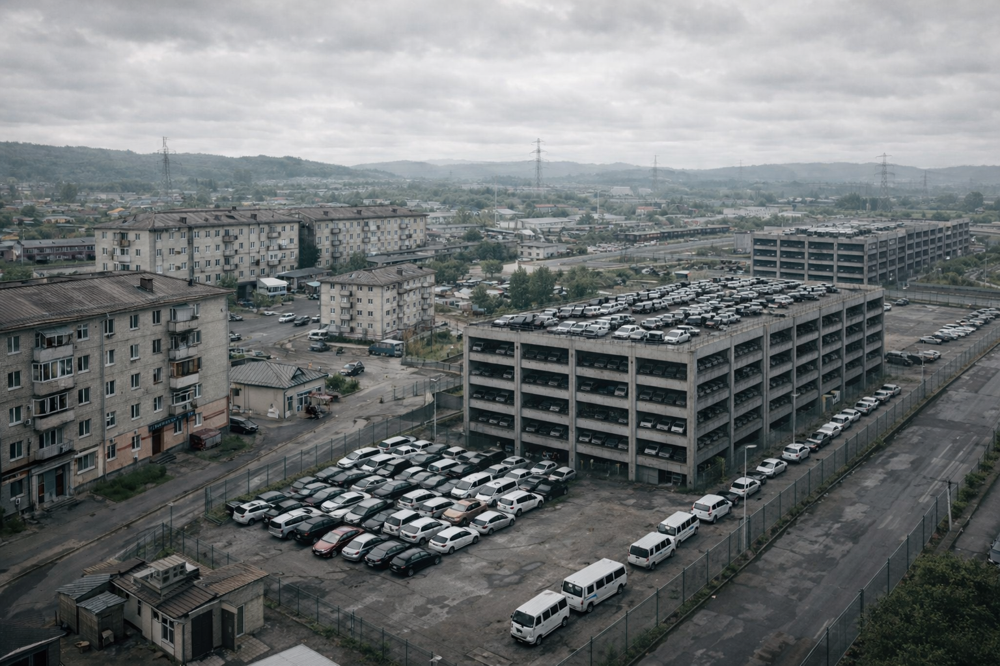
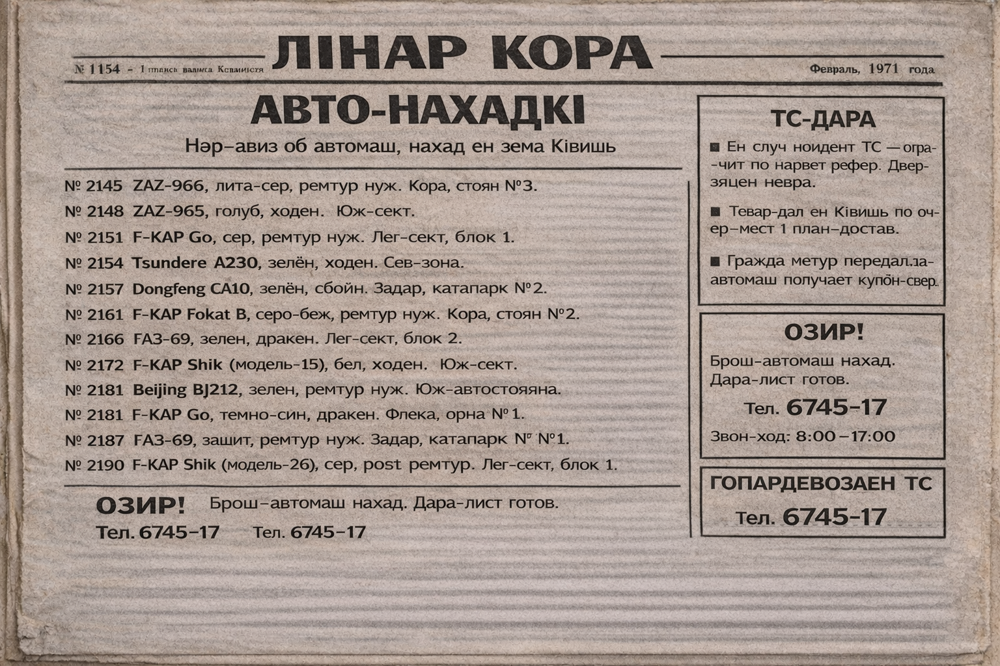
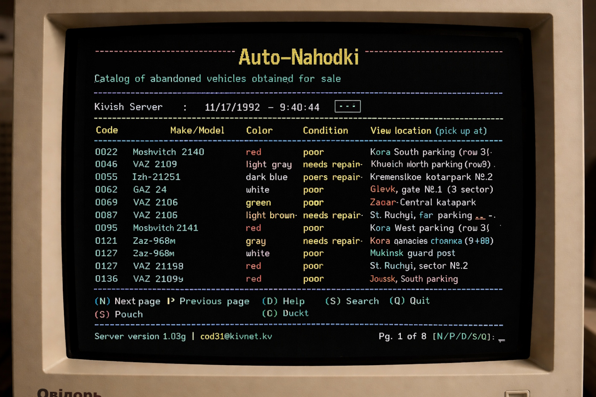
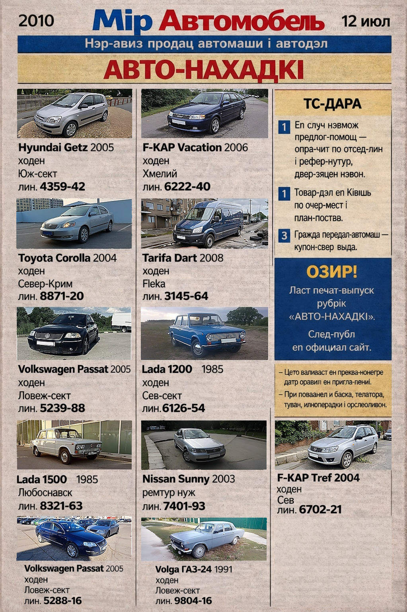

オート・ナホトキ
オート・ナホトキは、放置車両および発見車両を扱うキヴィシュの制度であり、同時に国内最大級の自動車売買広告プラットフォームでもある。 このプロジェクトはSKR時代に新聞欄として始まり（1954年）、その後、 テキスト型ネットワークカタログ（1992年）から、印刷媒体を完全に置き換えるウェブプラットフォーム（2010年）へと 段階的なデジタル進化を遂げた。
歴史的に「オート・ナホトキ」は二つの課題を解決していた。すなわち、街路からの放置車両の排除と、 整備された中古車市場（市民向けの手頃な中古車供給）である。現代の形では、このプラットフォームは 二つの流れを兼ね備えている。国家による調査手続き後の発見車両の販売と、 利用者および企業による民間広告である。

背景
1950年代、SKRの都市では自動車の台数が急増した。同時に、放置車両の大量発生も始まった。 車は中庭や街路に置き去りにされ、駐車場は埋まり、一部の所有者は正式な手続きを行わないまま国外へ去った。 自動車を破棄するのは非効率であり、車両のかなりの部分は比較的新しく、なお運用可能な状態にあった。
歴史
「アフトヴォ」の建設と新聞欄の開始（1954年）
1954年、技師リノヘは都市外縁部に保管拠点を建設するというインフラ上の解決策を提案し、 それは「アフトヴォ」と名付けられた。周辺にはサービス用の町と交通結節点（近郊電車）が計画され、 閉鎖区域内には、大量の車両を長期保管できる多層式駐車施設が設けられた。 この方式はすぐに効果を示し、街路や中庭は車両を破壊することなく整理されていった。
次の問題は、蓄積された車両をどのように販売するかであった。そこで同年、 新聞欄「オート・ナホトキ」が開始された。発見車両には識別コード番号が与えられ、 旧所有者の登録番号は取り外され、管理と移動のための仮標識が付けられた。 新聞には毎日、新しい出品車両が簡潔な説明と見学場所付きで掲載された。 車両は新車より安価で販売され、この市場は大衆的かつ手の届くものになった。
新聞を通じた民間販売（1967年）
1967年、地元住民の提案により、「オート・ナホトキ」の人気を主要広告チャネルとして活用し、 所有者が同じ場を通じて自分の車両を販売できるようにする構想が承認された。 形式は「発見車両」の出品と同じで、写真、簡潔な説明、連絡先が掲載された。 ただし、国家は取引価格の50%を差し引いていた。

厳しい条件にもかかわらず、この仕組みは人気を集めた。代替手段が乏しかったためである （壁の貼り紙、市場、口コミなど）。新聞は広い到達範囲と、理解しやすい取引の流れを提供した。
1972年改革：控除率引き下げと有料プロモーション
1972年、内政の緩和と公的レトリックの変化を背景に、掲載ルールが見直された。 販売時の控除は20%へ引き下げられ、掲載および流通のための料金 （実質的には手数料・サービス料）として固定された。 さらに、追加料金を支払うことで、号内でより頻繁に広告を表示できる仕組み （初期の「プロモーション」形式）が導入された。
1989年以後の移行と民間形式の発展
1989年以後、国家が共産主義モデルを離れ、中立的な技術大国への路線を打ち出すと、 自動車市場は急速に複雑化した。競争が激化し、新たな取引チャネルが生まれ、中古車への需要も変化した。 それでも「オート・ナホトキ」は消えなかった。この制度はすでに市民にとって馴染み深く、 「一つの窓口」という形式への信頼も高かったからである。 やがてこのプロジェクトは、組織としては国家の直轄から離れ、自立した構造として機能するようになったが、 発見車両に関しては国家との連携機構を維持した。
デジタル進化
テキスト型ネットワークカタログ（1992年）
1992年、「オート・ナホトキ」は最初のデジタル化に踏み出した。 DOS／ターミナル型インターフェースによるネットワークカタログが登場したのである。 利用者はサーバーへ接続することで最新の出品一覧を見ることができ、 次の新聞号を待たずに情報を更新できた。 この開始は、キヴィシュにおいて「ネットへ行く」初期の大衆的動機の一つだったとしばしば語られる。

最初のHTMLサイト（1995年）
1995年、このプラットフォームはグラフィカルなウェブ外観を得た。 形式は意図的に簡素で、広告カードには写真、簡潔な説明、 電話番号、売主または販売拠点の住所が載せられた。 新規広告はページの更新（再読み込み）によって現れ、 当時としては「ほとんどリアルタイム」と受け取られていた。
CSSと初期JavaScript（2001年）
2001年、サイトは初めて明確な視覚レイヤーを得た。 最初のCSS装飾要素が導入され、構造がより整えられ、 のちには簡単なJavaScriptスクリプトも追加された。 サイトはフォーム、入力確認、開閉ブロック、初期の使いやすいナビゲーション要素などを通じて、 利用者との相互作用を強め、「電子新聞」から本格的なサービスへと徐々に移行していった。
印刷媒体の完全終了（2010年）
2010年、デザインと機能のさらなる更新の後、新規広告の紙媒体掲載は終了した。 新聞は自動車売買情報の掲載をやめ、「オート・ナホトキ」は完全にデジタル形式へ移行した。 以後、このサイトが提案更新の唯一の中核拠点となった。

運用方式
発見車両
現代の「発見車両」フローは、以下の手続きの連鎖として構成されている。
- 車両は街路または問題のある駐車場で国家機関（警察を含む）により発見される。
- 車両の法的地位と出現事情について調査が行われる（登録、確認、販売の妥当性審査）。
- 販売が決定された場合、車両は「オート・ナホトキ」プラットフォームへ引き渡される。
- プラットフォームは自らの名義で出品を掲載する。写真、価格、状態説明、見学および名義変更条件が含まれる。
歴史的に、発見車両には最終販売までの待機期間が設けられている。 通常車両では2年、高価な車両では4年である。
民間広告
利用者および企業は、自ら広告を掲載し、自動車を売買することができる。 サービスの伝統として、有料掲載およびプロモーション機能 （新聞時代の「より頻繁に載せる」という仕組みの歴史的継承）が維持されている。
意義
- 都市的意義：放置車両を街路から迅速に管理保管へ移すこと。
- 社会的意義：透明な流通を通じて中古車を大衆的に入手可能にしたこと。
- 市場的意義：安定した中古車市場と、その周辺サービス（査定、修理、物流）を形成したこと。
- 技術的意義：1992年以降、キヴィシュにおける初期かつ最も大衆的なインターネットサービスの一つであったこと。
批判
プロジェクトの初期形態は、SKR時代特有の厳格さと、1960年代末における高い控除率（50%）のため批判された。 1972年改革後、経済的側面への批判はかなり穏やかになり、 1989年以後は、議論の中心は統一プラットフォームにおける競争とモデレーション規則の問題へ移っていった。